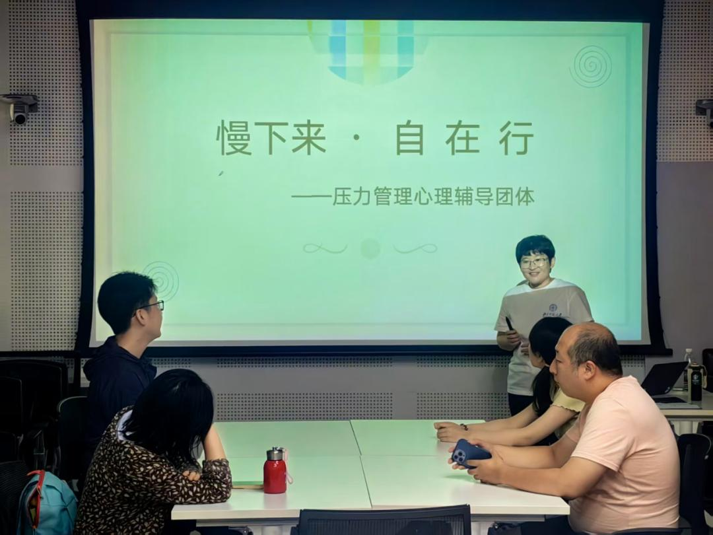
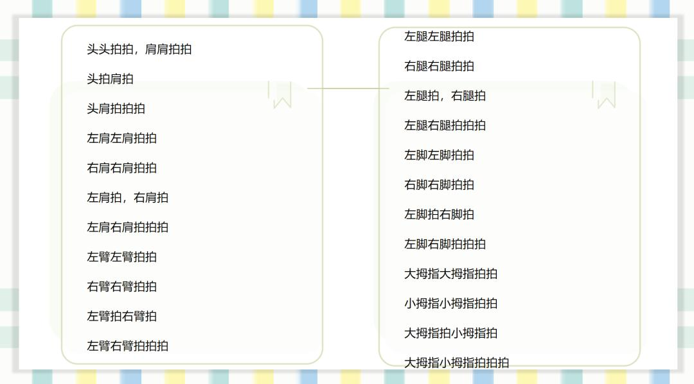
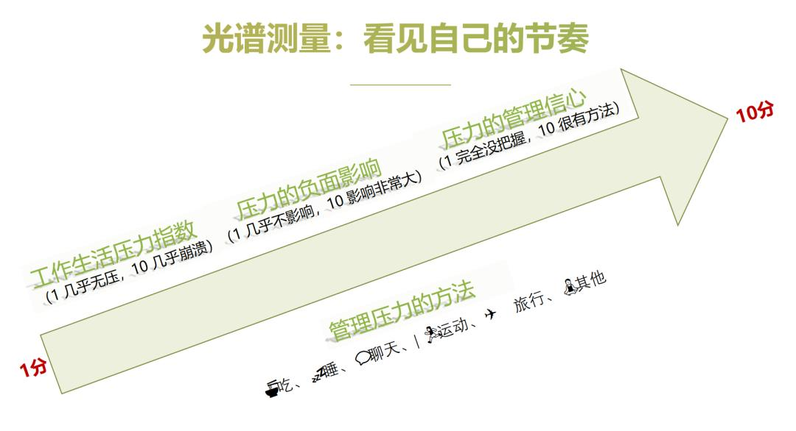
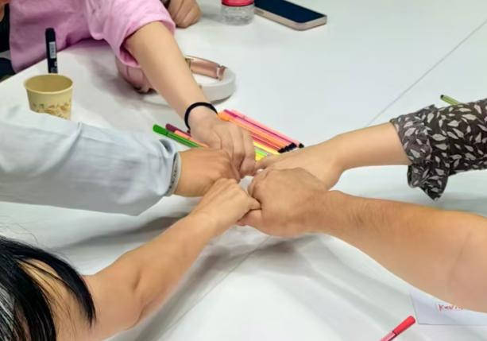
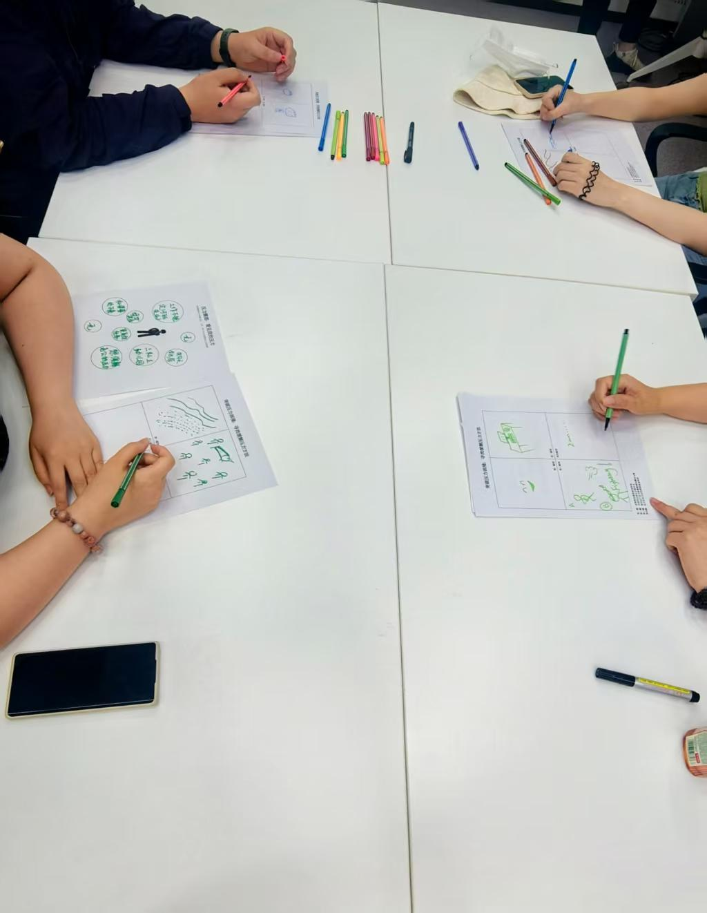
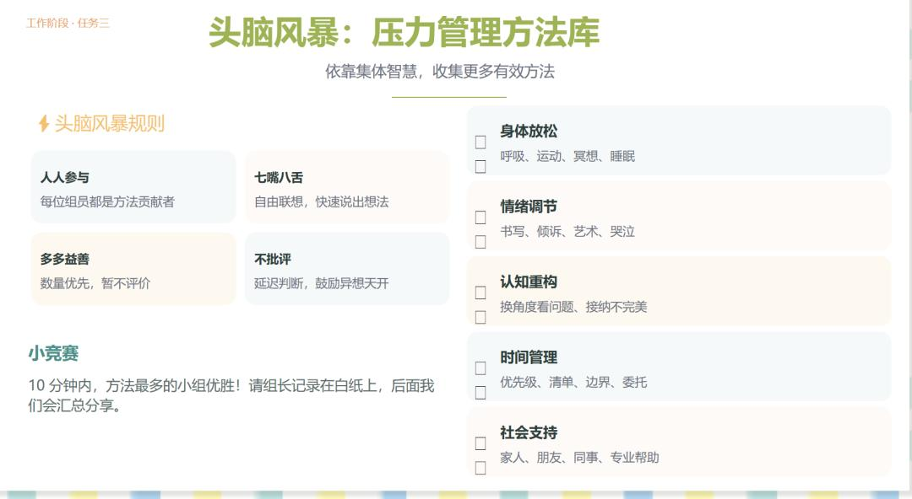

7月5日的一个午后，我们的压力管理团体辅导正式开启。这是一次面向社会的公益招募——不限职业，不限年龄，只要你觉得自己需要，就可以来。
之所以做这件事，是因为我们发现，太多人不是不想把生活过好，而是被压力压得喘不过气来。当一个人长期处于高压状态，他的注意力会收窄，情绪会变得易激惹，甚至连基本的耐心都会被磨损。
所以，在谈任何方法论之前，我们先谈一件更基础的事：你还好吗？
由此，来自不同行业、不同年龄段的伙伴，从觉察到行动——我们一起做了一次向内的探索。

7月5日，压力管理团辅活动正式开启——带领者金楠在介绍活动框架
🎯 团体目标
- 把模糊的压力感变成清晰可见的压力事件
- 厘清压力来源
- 发现你已经拥有但未曾注意的力量与支持
- 在团体智慧中拓展属于自己的压力工具箱
建立安全框架
活动正式开始前，带领者特别强调了三条原则：真诚倾听、参与投入、保密原则。
"我们每个人都会在这里分享一些真实的想法或者故事，但这些想法或者故事可能并不想让除了咱们团体外的其他人知道。所以请您一定保密——在团体结束后，我们可以把感受带走，把故事留下。"
团体动力学里有一个概念叫"安全框架"——当成员确信自己说的话不会被带出这个房间，防御才会真正放下。这三条原则，就是为接下来的探索搭建的安全地基。
这句话说完，带领者注意到有好几位伙伴轻轻点了点头。当安全框架被清晰地建立起来，团体才有了真正对话的可能。
快乐拍拍操：让身体先开口
热身环节，带领者带大家做了"单人拍拍操"。规则很简单：跟随带领者的指令，拍自己的头、肩、腿。
"头头拍拍，肩肩拍拍——头拍肩拍，头肩拍拍——"
一开始还有人放不开，动作小心翼翼。但节奏一快起来，笑声就止不住了。左右肩交替、左右腿交替，到后面根本跟不上，手忙脚乱，整个房间笑成一片。
现代人的日常生活高度依赖大脑——回消息、做决策、处理一件接一件的待办事项，几乎全在"脑力"频道。但压力不仅存在于认知层面，它首先储存在身体里。肩颈的僵硬、胃部的不适、说不清来源的疲惫——这些都是身体替我们记住的压力。
拍拍操的本质，是用身体动作把人从"脑子"拉回"身体"。当你专注于"左手拍左肩，右手拍右肩"的时候，你没有余力去想今天还有几件事没做完。身体先动起来，注意力就回来了。

单人拍拍操：从头部到四肢，节奏由慢到快，笑声一片
光谱测量：看见自己的节奏
热身之后，带领者做了一个"光谱测量"。在教室用5把椅子代表1分至10分，请大家根据自己的真实状态站到相应的位置。
三个维度：
- 工作生活压力指数（1 几乎无压 → 10 几乎崩溃）
- 压力的负面影响（1 几乎不影响 → 10 影响非常大）
- 压力的管理信心（1 完全没把握 → 10 很有方法）
第一个维度站出来，差距就很明显。有人站在3分的位置，有人直接走到了8分。旁边有伙伴露出惊讶的表情："我以为只有我压力这么大。"
在团体辅导中，"普同感"是一个核心治疗因子——当一个人发现自己不是唯一有某种困扰的人，他的孤独感会显著下降。很多人长期独自承受压力，以为"就我最难"。但当你在光谱上看到，原来身边的人也都站在差不多的位置，那种"只有我"的孤立感就开始松动。

光谱测量：三个维度帮助看见自己的压力节奏
有些伙伴压力指数不高，但受压力的影响很大，甚至没什么信心去管理它。当被问到有什么管理方法时，回答是——"硬扛"。
"硬扛"这个词让我心里一动。
它太真实了。不是不想管，
是不知道除了扛着，还能做什么。
而这，正是接下来要做的事——把"硬扛"变成"有方法"。
找到彼此的相似
手心手背随机确定第一位开始者，顺时针转两圈，每人说出自己的一个特点，其他人如果有相同的就举手——找出彼此的相似之处。
"我也在互联网行业。""我也是北漂。""我也有一个上幼儿园的孩子。"
相似点被一个一个找出来的时候，你能感觉到空气中的温度在上升。原本不太熟的几个人，因为一句"我也是"，忽然就近了。
分组完成后，每组要完成四项任务：选组长、起组名、定组规、签组约。起名字的时候创意满天飞，"0糖0卡0脂"现在还深深萦绕在带领者脑海中——很多人压力大的时候可能选择大吃大喝，放纵完后，这便是最朴素的愿望了吧。
在团体动力学里，成员共同制定的规则，比带领者单方面宣布的规则更有约束力，也更能营造安全感。因为那是他们自己说出来的话。当一个人亲手写下"不评判"并签上自己的名字，这条规则就不只是墙上的字，而是他给自己的承诺。

组员握拳加油：从陌生人到伙伴，只需要一句"我也是"
压力圈图：把模糊变成清晰
带领者给每位伙伴发了一张纸，上面画着空白的圆圈。请在圆圈里写下近期生活、工作、学习中的压力事件——不用写名字，写完就好。
两三分钟的安静，笔尖在纸上沙沙作响。
写完之后，每人2-3分钟在小组内分享自己的压力来源。第二圈，再分享做这个练习的觉察和启发。
叙事疗法认为，问题才是问题，人不是问题。当压力是一团模糊的、说不清的感受时，它像一个巨大的阴影笼罩着你，你不知道它有多大、从哪来、怎么对付。但当你把它一个一个写进圆圈里——"项目 deadline""父母身体""经济压力""亲密关系""自我发展"——它就从一团迷雾变成了一个个具体的、可以被看见的事件。
看见，是改变的第一步。

压力圈图：每个人用纸笔把模糊的压力外化为具体事件
"写下来才发现，其实我并不知道我到底在焦虑什么，或者原来让我焦虑的不是一件事，是好多件事叠在一起。但是写出来之后，好像也没那么可怕了。每一件，好像都能想到办法。"
这就是外化的力量。当压力从"我感觉快撑不住了"变成"我目前面临这五件事"，你就从被情绪淹没的状态，回到了可以思考、可以行动的状态。
同样的风，不同的感受
在大家分享完压力圈图之后，带领者引入了一个心理学知识点：压力因人而异——什么在影响我。
同样是面对项目截止日期，有的人觉得是天大的事，有的人觉得按部就班就好。同样是家人的一句催促，有的人一整天都缓不过来，有的人听完就放下了。
差异在哪里？不在事件本身，而在事件和我们之间那个"过滤器"——我们对事件的认知评估。
压力不是事件的属性，而是人对事件的评估结果。当你评估一件事"超出我的应对资源且对我的福祉有威胁"，压力就产生了；当你评估"我有能力应对"，同样的事就不构成压力。
带领者请大家回去看自己的压力圈图，试着想一想：这些压力事件里，有哪些是"真的超出能力范围"，有哪些是"我把它评估得比实际更严重"？
当你意识到"让我痛苦的不全是事件本身，
还有我看待它的方式"，你就获得了一个新的自由度——
你改变不了事件，但你可以调整看待它的角度。
有伙伴沉默了一会儿，说："有些事写的时候觉得天要塌了，但现在看……好像也没那么大。"这个觉察本身就是减压。
头脑风暴：我们的压力工具箱
这是今天最热闹的环节。
规则很简单：规定时间内，每个小组头脑风暴尽可能多的压力管理方法，写在白纸上。方法最多的小组优胜。
依靠集体智慧，收集更多有效方法。一个人能想到的方法是有限的，但几个人的智慧叠加在一起，工具箱一下就丰满了。让每个人意识到：方法一直都在，只是你一个人的时候想不起来。

头脑风暴：小组共创压力管理工具箱，涵盖身体放松、情绪调节、认知重构等维度
各小组的成果展示环节，每个组都贡献出了令人眼前一亮的方法——有的很实用，有的很创意，更重要的是，每个方法背后都站着一个真实的人在说："这个对我有用"。
感言与承诺：带走方法，留下故事
最后，我们做了一个简单的收尾。每个人用一句话总结今天的感受。可以是一句感谢，也可以是一个新的发现。
"今天最大的收获是发现，原来身边有这么多人和我一样。"
"写下来之后才发现，我扛的东西其实没有想象中那么重。"
"谢谢你们听我说，平时这些话没有地方讲。"
然后，所有人手牵手，一起念出承诺：
"感谢你我小组的伙伴，感谢你们的聆听——让我感受到被理解被尊重；感谢你们的分享——开阔了我的视野，丰富了我的经验。
我承诺：遵守组规，保守秘密，留下每个人的故事，带走压力管理的有效方法和信心，用积极心态迎接每一天。"
一个一个说出自己的名字。声音不大，但很坚定。
写在最后
这次相聚，时间不长。但从"硬扛"到"有方法"，从"只有我"到"原来你也一样"，这条路已经走出了第一步。
压力不会消失。它是生活的一部分，也是成长的信号。
我们做的不是消灭压力，而是学会与它共处——
看见它，理解它，然后用自己选的方式去回应它。
"你比昨天更懂得照顾自己，这已是一种胜利。"